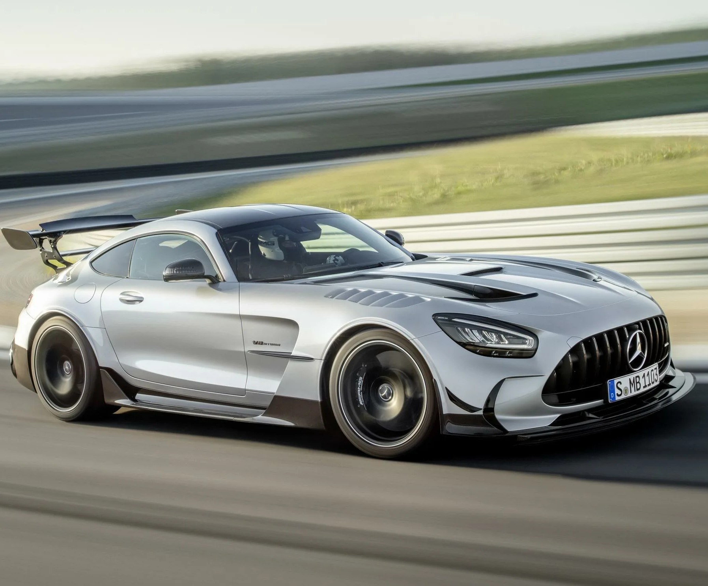
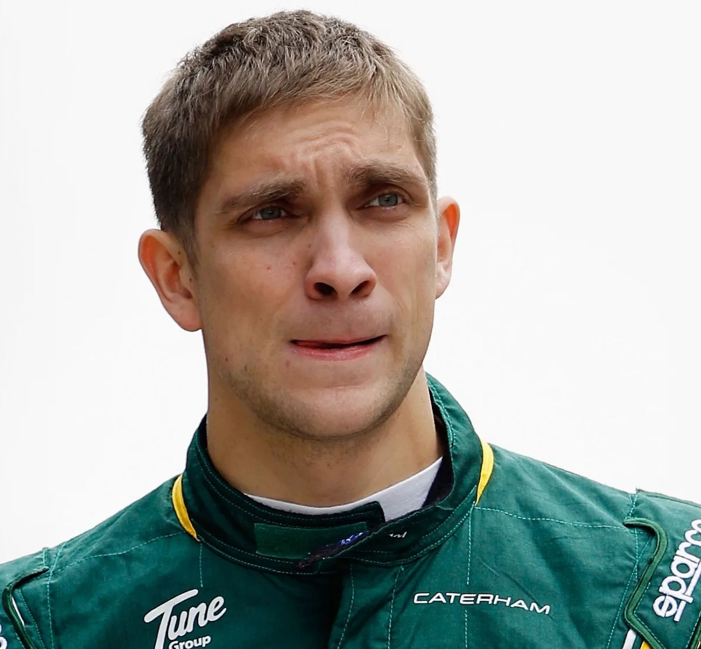
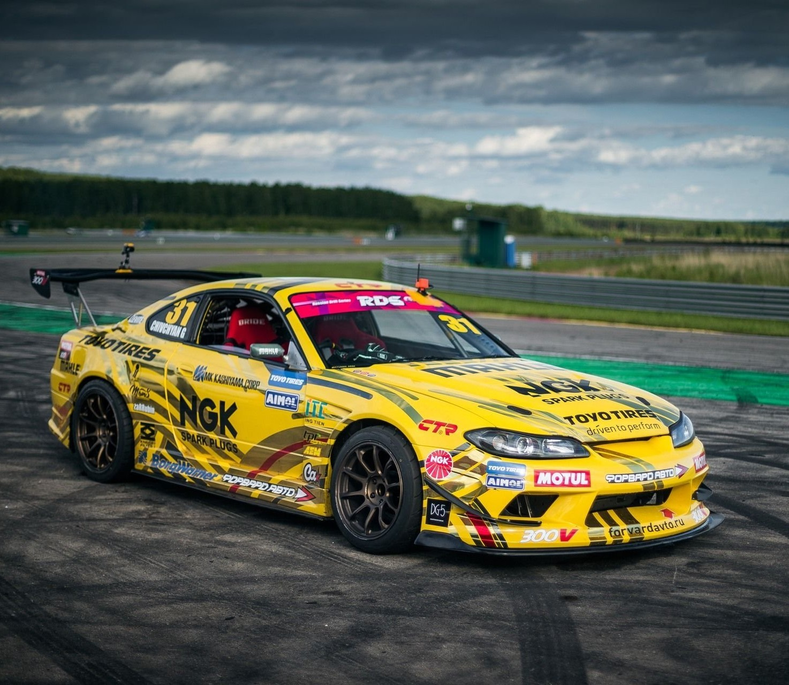
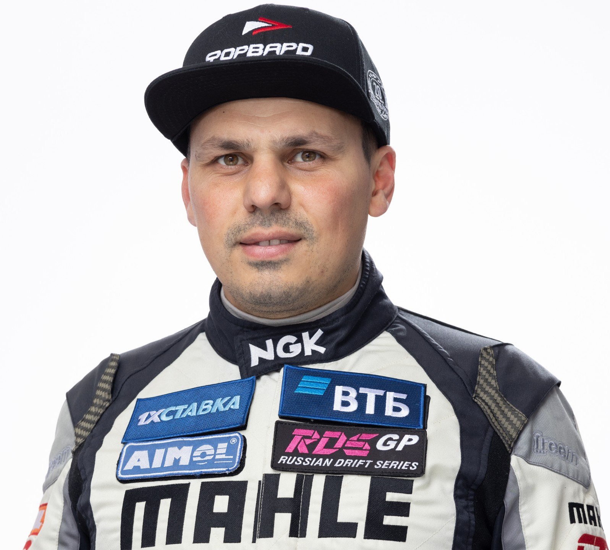
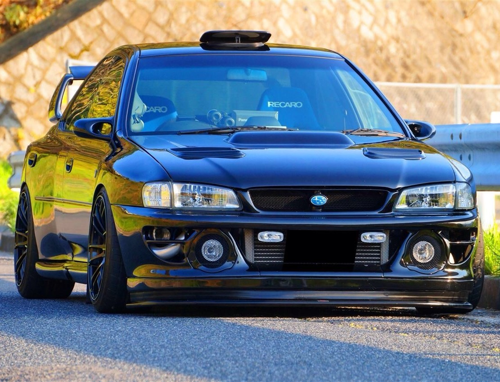
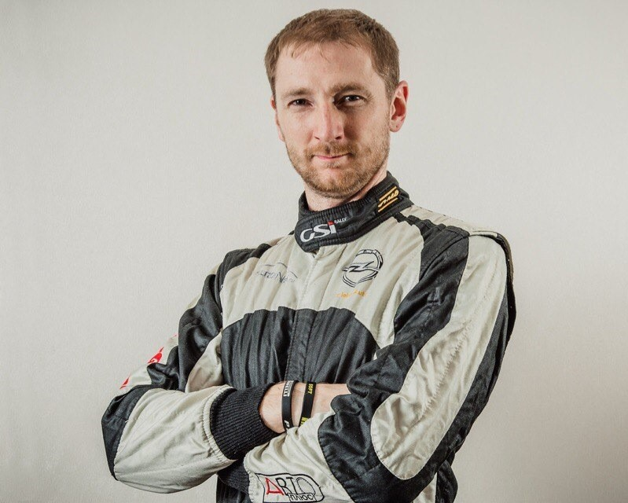
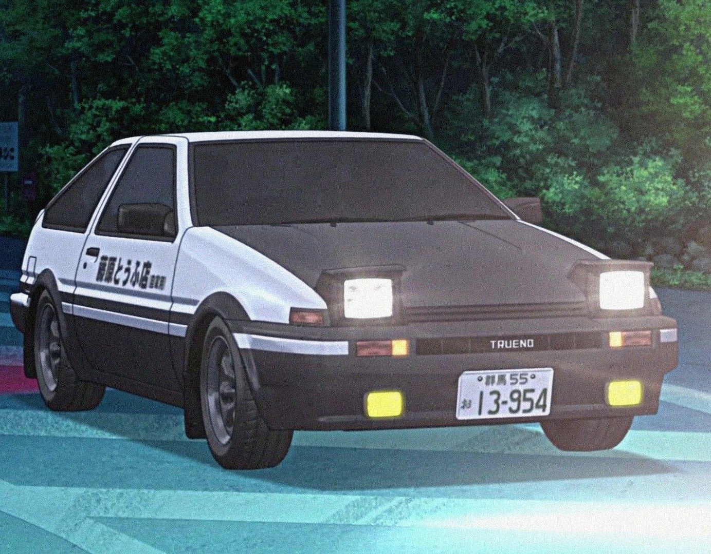
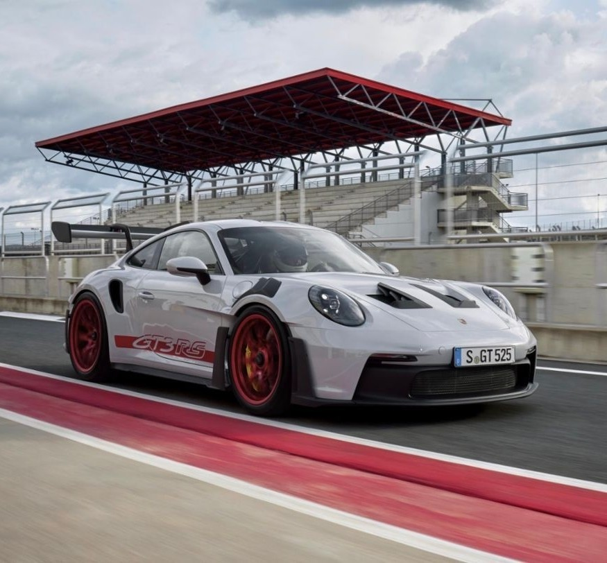
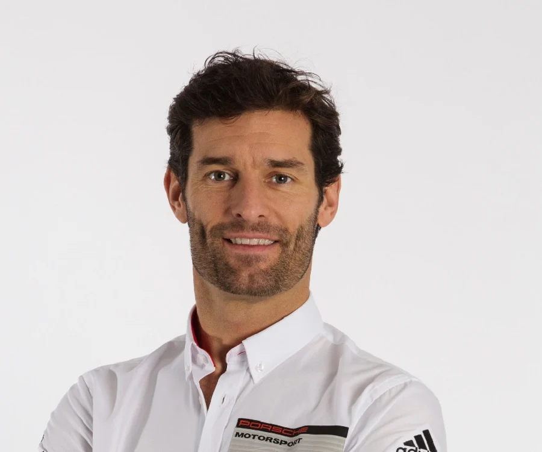

Отзывы гонщиков на их любимые автомобили
1. Максим Петров (чемпион Формулы-4, тест-пилот F1)
"Mercedes-AMG GT Black Series: когда инженерия граничит с магией"

За 7 лет в монопостах я испытывал сотни машин, но Black Series — это технологический шедевр. На трассе в Барселоне она показала 1:38.2 — всего на 3 секунды медленнее нашего тестового болида F1! Двухлитровый V8 с 720 л.с. в режиме Race Plus раскручивается до 7500 об/мин с какофонией, достойной оперного театра.
Особенно впечатляет активная аэродинамика: при 250 км/ч задний антикрыло создает 400 кг прижимной силы — достаточно, чтобы перевернуть слона. Но для улицы это слишком: подвеска даже в комфортном режиме жестче, чем у моего картинга в детстве.
Вердикт: Для трека — идеально. Для дорог — садизм. Рекомендую только тем, у кого есть трейлер и личный механик.
2. Георгий "GOCHA" Чивчян (чемпион Russian Drift Series) "Nissan Sylvia S15: мой японский любовник с немецким характером"
 Эту машину я называю "Троянский конь" — японская внешность скрывает BMW B58 под капотом. После кастомного чипа на 520 л.с. она рвет асфальт как греческая фурия! На соревнованиях в Сочи я использовал её для "перекладок" на 5-й передаче — момент на средних оборотах просто бешеный. Но есть нюанс: родной дифференциал слишком "умный" для дрифта. Пришлось ставить механический LSD за $4000. Зато коробка ZF8 — шелковый нож в масле. Для тренировок новичков советую ограничить мощность до 400 л.с., иначе будете целовать отбойники. Совет от GOCHA: Берите в белом цвете — следы от резины видны лучше, это помогает анализировать траектории.
3. Алексей Лукьянюк (чемпион Ралли России)
"Subaru Impreza WRX STI: 15 лет вместе, и я всё ещё влюблён"
 Эта "лопата" (как мы её называем) прошла со мной 47 спецучастков. Боком на гравии при -25°C — пожалуйста. Прыжки на "летучей финке" — легко. Турболаг 90-х годов — да, но это часть её шарма! Секрет живучести? Пространственная рама и симметричный полный привод. На ралли "Золотые Кубки" 2023 года мы с STI обошли новые Polo R5 на мокром черноземе — механики потом 3 часа отмывали "субарик" от грязи, но ни одной поломки! Лайфхак: Всегда везите запасной топливный насос — слабое место после 2010 года.
4. Такуми Фудживара (легенда уличных гонок) "Toyota Sprinter Trueno AE86: когда 150 л.с. важнее 500"
 4:30 утра. Спуск Akina. Лунный свет скользит по асфальту. Включаю зажигание — старый 4A-GE просыпается с характерным стрекотом, будто цилиндры перебрасывают кости. Без турбины, без электронных помощников, только водитель и 9000 оборотов до отсечки.
Секрет скорости? Водить на грани срыва, но не переступать её. На спуске Akina я прохожу "Угол слепого бога" в 142 км/ч, отпуская газ ровно на 0.3 секунды — дольше, и зад сорвётся, меньше — потеряешь траекторию. Фишка AE86: Она не едет — танцует. Когда включаешь пониженную передачу перед поворотом, дифференциал LSD поёт, как монах в храме, а резина Toyo Proxes R888R оставляет на асфальте иероглифы из дыма.
5. Марк Уэббер (бывший пилот Red Bull Racing)
"Porsche 911 GT3 RS: самый честный автомобиль в мире"  После 215 Гран-При скажу так: GT3 RS даёт 90% ощущений от F1 за 1% стоимости. На Нюрбургринге я выжал из него 6:56 — всего на минуту медленнее, чем на LMP1! Секрет в отсутствии электронных костылей: даже ABS здесь спортивная, а не "нянька". Мотор 4.0 литра раскручивается до 9000 об/мин — последние 500 оборотов звучат как предсмертный крик динозавра. Профессиональный вердикт: Лучший инструмент для тренировок перед сезоном. Каждый км за рулём делает вас быстрее.
 (1).jpg)